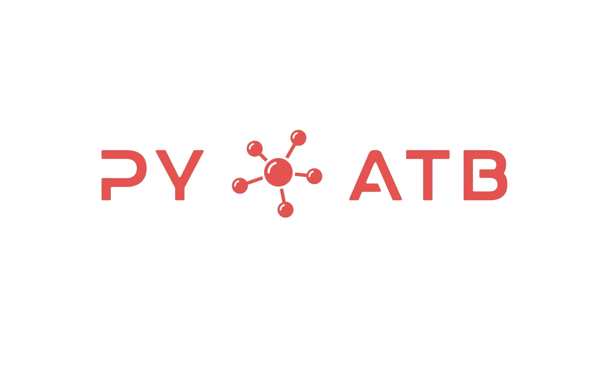
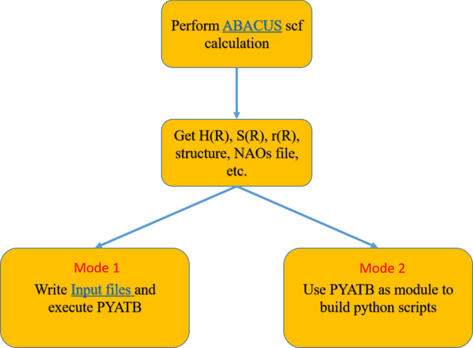

Introduction¶

PYATB (Python ab initio tight binding simulation package) is an open-source software package designed for computing electronic structures and related properties based on the ab initio tight binding Hamiltonian. The Hamiltonian can be directly obtained after conducting self-consistent calculations with first-principles packages using numerical atomic orbital (NAO) bases, such as ABACUS. The package comprises three modules - Bands, Geometric, and Optical, each providing a comprehensive set of tools for analyzing different aspects of a material’s electronic structure.
The Bands module enables users to calculate essential properties of band structures, including the partial density of states (PDOS), fat bands, Fermi surfaces, Wyel/Dirac points, and more. Additionally, the band unfolding method is utilized to obtain the energy band spectra of a supercell by projecting the electronic structure of the supercell onto the Brillouin zone of the primitive cell.
In the Geometric module, users have access to tools for computing Berry phase and Berry curvature-related quantities, such as electric polarization, Wilson loops, Chern numbers, anomalous Hall conductivities, and more.
The Optical module offers a range of optical property calculations, including optical conductivity and nonlinear optical responses, such as shift current and Berry curvature dipole.
PYATB is licensed under GPLv3.0, making it freely available for use and modification by the scientific community. The main developers of PYATB are Gan Jin, Hongsheng Pang, Yuyang Ji, Zujian Dai, under the supervision of Prof. Lixin He at the University of Science and Technology of China.
Capabilities¶
PYATB provides three major modules: Bands module, Geometric module, Optical module, each with its own set of functions:
Bands module
- Band structre
Allows users to calculate the energy bands and wave functions using three different \(\mathbf{k}\)-point modes: k-point, k-line, and k-mesh.
- Band unfolding
Calculates the spectra weight by unfolding the energy bands of a supercell into the Brillouin zone (BZ) of the primitive cell.
- Fermi energy
Calculates the Fermi energy at a given temperature.
- Fermi surface
Plots the Fermi surface.
- Find nodes
Allows users to search for degenerate points of the energy bands in the BZ within a specified energy window. This function can be used to find the Weyl/Dirac points in Weyl/Dirac semimetals.
- DOS and PDOS
Calculates the density of states (DOS) and partial density of states (PDOS) of particular orbitals.
- Fat band
Provides the contribution of each atomic orbital to the electronic wave functions at each \(\mathbf{k}\)-point in the BZ.
- Spin texture
Plots the spin polarization vector as a function of momentum in the BZ.
Geometric module
- Wilson loop
Enables users to calculate the \(\mathbb{Z}_2\) number by tracking the Wannier centers along the Wilson loop.
- Electric polarization
Evaluates the electric polarization in various directions for non-centrosymmetric materials based on the Berry phase theory.
- Berry curvature
Computes the Berry curvature in the BZ.
- Anomalous Hall conductivity
Calculates the anomalous Hall conductivity using Berry curvature.
- Chern number
Calculates the Chern number of a system for any given \(\mathbf{k}\)-plane.
- Chirality
Examines the chirality of Weyl points by calculating the Berry curvature on a sphere around the \(\mathbf{k}\) point.
Optical module
- JDOS
Calculates the joint density of states (JDOS), which characterizes both electronic states and optical transitions.
- Optical conductivity and dielectric function
Calculates the frequency-dependent optical conductivity and dielectric function.
- Shift current
Calculates the shift current conductivity tensor for the bulk photovoltaic effect.
- Berry curvature dipole
Calculates the Berry curvature dipole which leads to the nonlinear anomalous Hall effects.
Methodology¶
PYATB is based on the ab initio tight binding model, where the parameters of the Hamiltonian are generated directly from the self-consistent calculations using first-principles software based on numerical atomic orbitals (NAO) bases, such as ABACUS.
NOTE: ABACUS (Atomic-orbital Based Ab-initio Computation at UStc) is an open-source package based on density functional theory (DFT). For a detailed introduction, please refer to https://abacus.ustc.edu.cn/.
In a periodic system, the Kohn–Sham equation at a given \(\mathbf{k}\) point can be written as,
Here \(\Psi_{n\mathbf{k}}\) is the Bloch wave function of the \(n\)-th band, and can be expressed under NAO as,
where \(|\mathbf{R}\mu\rangle \equiv \phi_{\mu}\left(\mathbf{r}-\tau_{\mu}-\mathbf{R}\right)\) is the \(\mu\)-th atomic orbital, in the \(\mathbf{R}\)-th unit cell, and \(\tau_{\mu}\) denotes the center position of this orbital. The composite index \(\mu = (\alpha, i, \zeta, l, m)\), where \(\alpha\) is the element type, \(i\) is the index of the atom of each element type, \(\zeta\) is the multiplicity of the radial functions for the angular momentum \(l\), and \(m\) is the magnetic quantum number. The coefficient of the NAO is given by \(C_{n\mu}(\mathbf{k})\).
Under the NAO base, the Kohn-Sham equation becames a eigenvalue problem,
where \(H(\mathbf{k})\), \(S(\mathbf{k})\) and \(C_{n}(\mathbf{k})\) are the Hamiltonian matrix, overlap matrix and eigenvectors of the \(n\)-th band, respectively.
To obtain the \(H(\mathbf{k})\) and \(S(\mathbf{k})\), we first calculate tight binding Hamiltonian in real space via first-principles softwares based on NAOs, such as ABACUS,
Once we have the \(H_{\nu\mu}(\mathbf{R}) \) and \(S_{\nu\mu}(\mathbf{R})\), we can obtain the Hamiltonian matrix and the overlap matrix at arbitrary \(\mathbf{k}\) points using the following relation,
When solving for the geometric properties of the bands, we also need the dipole matrix between the NAOs, namely:
The dipole matrix \(\mathbf{A}^{R}_{\nu\mu}(\mathbf{k})\) can then be obtained by Fourier transform,
After obtaining the tight binding parameters \(H_{\nu\mu}(\mathbf{R})\), \(S_{\nu\mu}(\mathbf{R})\), and \(r_{\nu\mu, a}(\mathbf{R})\) from the first principles software, the electronic structures and related physical propertie can be calculated using PYATB. More description of the methods used in PYATB can be found in Ref. ???
Workflow¶
The workflow of PYATB involves several key steps. First,one need to perform self-consistent calculations using ABAUCS to generate tight binding Hamiltonan, including \(H_{\nu\mu}(\mathbf{R})\), \(S_{\nu\mu}(\mathbf{R})\), and \(r_{\nu\mu, a}(\mathbf{R})\). Some of the functions may require crystal structur file and atomic orbital data. Once all the necessary files are obtained, the user can either write an Input file to perform the corresponding function computation using PYATB or write a script utilizing the PYATB module to carry out the calculations.
